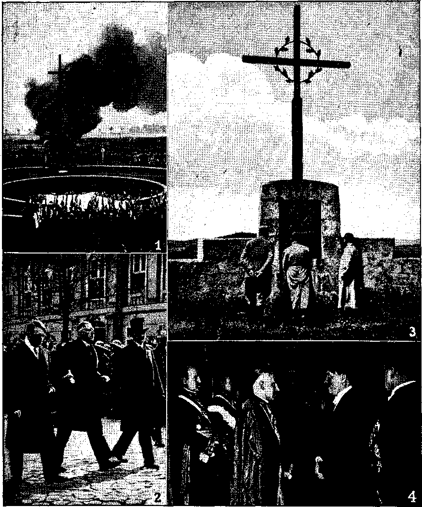

Contents
The Disappearance of Adolf Hitler A Glimpse of the Satanic Powers Goebbels Died but Hitler Didn’t Some of the Yarns About Hitler Hitler’s Den and Way of Escape 'l The Submarines and Eva Braun How Would Jesus Run a Business!
'Workers Are Concerned for the Future The Twenty-second Amendment
Indian Population
Little Maids of New York
“Thy Word Is Truth”
Creation Account Harmonious
Freedom of Worship in Australia The Glenelg Assembly and After
’ Degradation of the Press Kingdom News No. 14-A Findings of the High Court Bits of Religion in Britain Rumania’s Magnates Go Free Theocratic Assembly in South Africa A People with a Purpose Priests Overplay Their Hand Finding “Sheep” Under the Bed
The Nonsense of the Zodiac
Michael Servetus, Victim of Intolerance Oil in Britain
In Australia and New Guinea
3
4
6
8
10
11
12
13
13
14
15
16
18
19
19
20
21
22
22
23
25
26
27
28
29
30
31
Published every other Wednesday by WATCHTOWER BIBLE AND TRACT SOCIETY, INC.
117 Adams St., Brooklyn 1, N. Y„ U. S. A.
OFFICERS
Prealdont N. H. Knorr
Secretary W. E. Van Amburgh
Editor Clayton J. Wood worth
Five Cents a Copy ■
JI a year In the United States (1.25 to Canada and all other countries
NOTICE TO SUBSCRIBERS
Remittances: For your own safety, remit by postal or express money order. When coin or currency is lost in the ordinary malls, there Is no redress. Remittances from countries other than those named below may be made to the Brooklyn office, but only by International postal money order.
Receipt of a new or renewal subscription will be acknowledged only when requested. Notice of Expiration is sent with the journal one month before subscription expires. Please renew promptly to avoid loss of copies. Send change of address direct to us rather than to the post office. Your request should reach us at least two weeks before the date of issue with which It is to take effect. Send your old as well as the new address. Copies will not be forwarded by the post office to your new address unless extra postage is provided by you.
Published also in Greek. Portuguese, Spanish, and Ukrainian. . ■
OFFICES FOR OTHER COUNTRIES
Argentina Calle Honduras 6646-48, Buenos Aires Australia 2 Homebush Rd., Strathfleld, N. S. W. Brazil Rua Lie in io Cardoso 330. Rio de Janeiro
Canada 40 Irwin Ave., Toronto 5, Ontario, Canada
England 34 Craven Terrace, London, W. 2
Mexico Calzada Melchor Ocampo 71, Mexico, D. F. South Africa 323 Boston. House, Cape Town
Entered as second-class matter at Brooklyn. N. T., under the Act of March 3, 1879.
The Vaudois Teacher
♦ The Vaudois (as they were called in France),’ or Waldenses, or Albigenses, were Jehovah’s witnesses. They carried the Word of God, even though it meant death to be caught with it. They ap-, peared as peddlers in the Alpine valleys. First, they would offer their wares, and after they had effected their sale to the lady of the castle they would say-— but let Whittier tell it:
“0 lady fair, I have yet a gem which a purer lustre flings
Than the diamond flash of the jewelled crown on the lofty brow of kings;
A- wonderful pearl of exceeding price, whose virtues shall not decay;
Whose light shall be as a spell to thee, and a blessing on thy way!”
The lady glanced at the mirroring steel where her form of grace was seen,
Where her eyes shone clear, and her dark locks waved their clasping pearls between. “Bring forth thy pearl of exceeding worth, thou traveller, gray and old,
And name the price of thy precious gem, and my page shall count thy gold.”
The cloud went off from the pilgrim’s brow, as a smajl and meagre book,
Unchased with, gold or gem or cost, from his folding robe he took! -
“Here, lady fair, is the pearl of price.
• May it prove as such to thee!
Nay, keep thy gold., I ask it not, for the Word of God is free!” ,
By the Council of Toulouse, France, in 1229, it was forbidden to have the Word of God. But these so-called “peddlers” got the Word through.-—Contributed.
. My son, if you receive my words, and store my commands within you, inclining your ear to wisdom, and applying your mind to reason; if you appeal-to intelligence, and lift up your voice to reason; if you seek her as silver, and search for her as for hidden treasures—then will you understand reverence for the Lord, and will discover the knowledge of God. —Proverbs 2; 1-5, American Translation,
“And in His name shall the nations hope.”—Matthew 12:21, A.S'.V.
Volume XXVH Brooklyn, N. Y,( Wednesday, October £4, 1945 Number 681
The Disappearance of Adolf Hitler
BORN April 20, 1889, Adolf Hitler was a carpenter and paper-hanger and architectural draftsman in Vienna from 1907 to 1912, when he removed to Mtmich. There, in 1914, he joined the German army, and after World War I, when he was thirty years of age, he organized the National Socialist Workers’ Party, or the Nazis, as commonly called. Jesuitically trained, a capable orator, demonized, and entirely without principle, he became dictator of Germany March 5, 1933, and from that moment became a menace to all mankind.. Excepting only the first man, Adam, Hitler is the responsible tool for the death of more humans than any other man that ever lived. What has become of this man is a subject of interest to all, and there is now presented, from a great variety of sources, what information .is available on the subject.
There is some reason to believe that Klara Poelzl, the mother of Adolf Hitler, was the great-granddaughter of Napoleon Bonaparte, as a result of one , of his illicit love affairs at Austerlitz; there is evidence that in her youth Hitler’s mother paid visits to Napoleon’s tomb in Paris, about the year 1880; there is the certainty that the first thing Hitler did after capturing Paris was to visit Napoleon’s tomb, and it is certain also that this wholesale murderer, at the height of his power, gave strict orders that his body was to be placed in the tomb beside that of Napoleon, sb that the bodies of the two murderers might lie side by side, it need occasion no surprise, therefore, that Adolf Hitler as-piled to imitate the career of the man that covered Europe with blood and tears for the twenty terrible years from 1795 to 1815. He considered himself a second and a greater Napoleon. Everything about him shows that there was no limit to his egotism. Moreover, he had Napoleon’s life history to guide him.
Submarine Commander Bender
It sometimes happens that a military man .gets to bragging of what his side will do or can do, and so lets fall some interesting information. This wms done by a German submarine commander named Bender to German cadets at Esbjerg, Denmark, in October, 1944. By that date the Russians had cleared their country of German troops and were closing in on Hungary. It began to look bad for der Fuehrer, and so Bender said:
If one day it finally comes to pass that our beloved Fuehrer must leave Germany temporarily, the German Navy will take him in its care. The German Navy knows all the island domains of this world. It has U-boat bases and hiding places in the most distant seas. There we have stored supplies of all kinds, arms, ammunition, concrete, tools and machinery, and if the land war one day should end, we will be able to continue the struggle another ten years, rallied around our Fuehrer. [Wireless to the New York Times from,Stockholm, Sweden, October 29, 1944]
By January, 1945, Hitler realized that his day was done, at least for the present, and though he "was driving everybody else to sacrifice themselves and their loved ones, he was manifestly looking for some way to save his own life and that of the unmarried mother of his two children. Tn other words, he was looking for an Elba from which, perhaps, if he had Napoleon's success, he might stage a come-back. In that month a high German officer, captured in Italy, said of Hitler:
* Der fuehrer gives an impression of complete absentmindedness. When our general reported to him, der fuehrer was absolutely motionless and distant.
In a radio address that month he urged the sick and aged to fight and the women and girls to stand by the cause. Following the? teachings of his church ("Roman Catholic) he denounced Communism and democracy, and wound up by imploring his god (the Devil) to grant him mercy, saying, “The Almighty will -not desert one gave all for his people/’
No one should he disturbed by the information that Hitler worships the
Devil: millions are doing so. Hitler hates the true God, Jehovah (mentioned some 6,600 tim?s in the Scriptures), so much that he even issued orders that the name be expunged from every church in Germany. And men and women were given liberty if they promised to renounce Him, and were remanded to death or worse than death if they refused to do so.
A Glimpse of the Satanic Powers
Al! who are familiar with the Scriptures will remember the third temptation of Christ Jesus, wherein He was given a vision of all the governments of this present evil world. Matthew records it thus:
Again, the devil taketh him up into an exceeding li igh mountain, and shew-eth him all the kingdoms of the world, and the glory of them; and saith unto him, All these things will I give thee, if thou wilt fall down and worship me. Then saith Jesus unto him, Get thee hence, Satan: for it is written, Thou shalt worship the Lord thy. God, and him only shalt thou serve. Then the devil leav-eth him, and, behold, angels came and minis! cred unto him.
Hitler could not sec that Germany was one of those governments, though lie did seem to see, to some extent, that Russia is one of them. Tn his broadcast February 24,1945, on the
25th anniversary of the National Socialist Party’s program he charged that when the “bourgeois states” made common cause with Russia, their
stupid representatives think that they can conclude a treaty with the devil, cherishing the hope that they will he more cunning than he is satanic.
At that meeting, to thirty of his leaders, Hitler admitted that the war was lost and that the German casualties then amounted to 12,500,000 dead, wounded and missing. At about the same time, he was quoted as saying, “"God help me for what I will do in the last eight days of this war.” Just what he meant by that expression is unknown.
From a photograph of Hitler leaving Catholic cathedral. In London Catholic, Herald.
How preposterous that a man who insisted upon wholesale torture and death of the Jews, and who required that those who personally sought to get rid of him should be hung naked and choked by wire instead of rope, so that their sufferings would be more exquisite and last longer, should dare to take the name of God upon his lips! This inhuman fiend denied these men any consolation on their way to the gallows, had them put on wooden slippers so that they would stumble on the way, condemned them to be unshaven and weak from loss of food, and in the execution room had special lamps installed so that Nazi photographers could take movie and still pictures of the men in their death agonies. These pictures were afterwards gleefully shown to Hitler and his admirers.
Goebbels Was True to the Devil
There can be no question that Goebbels was one of the biggest liars that ever lived, but he seems to have been true to his god, the Devil, down to the very end of his life. A dispatch from London, published in the New York Times, described him thus:
A cynical propagandist who set out without scruple to warp the mind of a whole nation, he was the great intellect of the Nazi party, a Catholie-bred university-trained "Rhinelander. A Nazi since lie first heard Hitler speak in 1922, he was largely responsible for the hypnotic hold his party fastened on G ermany.
In what was probably his last broadcast, with the Russians ■ forcing their way into Berlin from the east, and America and Britgjn from the west, Goebbels said that Hitler would find the way out; that
Our fuehrer will go forward until the very end. We vow we will never Jet him down. [Dispatch from London, April 19, 1945]
On May 2, 1945, it was already circulated in London that Goebbels was dead. June 8 the
New York Daily News quoted Kus si an authorities as saying that in the big underground fortress built by the Nazis beneath the Keichschancellery in Berlin
Bodies positively identified as those of Paul Josef Goebbels and his wife and children were found.
At about the same time, and evidently referring to the same information, the New York Times said:
Goebbels was a cynical careerist who would have gladly fled had. he been able to, and if he finally poisoned himself and his family it was -ronly because his master had kept him at his 'post until it was too late for flight,
Goebbels Died but Hitler Didn’t
The reaction of the London Cavalcade to the same dispatches as those last mentioned is very interesting. It talks about the creation of a mystical Hitler, which is manifestly absurd. But it gives good reason to a hardheaded analyst to lead to the opinion that Hitler skipped out of Berlin just in time to escape death. This opinion will be explored later. Meantime, here is the Cavalcade story:
For some time before the final act in Berlin preparations had been made to keep alive the Hitler spell over young Germans by propaganda of a romantie mythological character. Hitler was presented as the embodiment of the “eternal Germany”, a man impervious to mortal harms and destined to survive in one form or another as the fuehrer of “invincible Germany”.
Lack of . positive information concerning Hitler’s end has created a mystery from which the myth is growing. Information obtained by Allied Intelligence Officers from men allegedly near the fuehrer in the last days of Berlin is confused and contradictory. Much of it is probably a "plant”. Hitler, it is said, fought to the end with his Schar der Getreuen, the group of the most faithful. When the fight was over, and while Berlin was still wrapped in flames, N.K.V.D. officers, the Soviet Security Police, searched in vain for a week to recover the fuehrer’s body.
They found the corpses of Goebbels and his family, in whose company, it is believed, Hitler spent his last hours. Some of the bodies of Hitler’s most faithful were also there, mostly burned beyond recognition; but Soviet experts are positive that the remains of Hitler were not among them. From this ideal mystery setting the, myth arises, With the exception of Joachim von Ribbentrop [now in Allied hands], all the top Nazis have been accounted for, either dead or alive. Himmler poisoned himself; Goering, Ley and Rosenberg are prisoners. Only Hitler is missing.
Nazi Party philosopher Rosenberg, original begetter of the Hitler myth, declared in a speech in Munich, delivered in September, 1942:
“The Fuehrer will not die like you and I. Like Jesus Christ, he will become a myth even before the tears of those who mourn him are dry. Whenever the German Reich is in danger, and whenever it is in need of a great man, the fuehrer will appear, either to the masses or to a few faithful disciples, to guide and lead them. From now on until eternity, Germany,! and especially German youth, will always wait and hope for Adolf Hitler.”
Hitlerite technique for winning the souls of ‘ German children is too well known to be set forth in detail here. It included semi-military training from a very early age, the distortion of historical and geo-political facts, dissemination of the “master race” theory, the estrangement of children from parents for the purpose of arresting home influence, antiChristian propaganda, and physical training aimed at preparing the young for acts of brutality. Children were taught to spy on their parents and to make daily reports to their officers on conversations heard at home [Catholic Action in action]. Before the war the Nazis publicized cases in which members of the Hitler Youth betrayed, and even stabbed their parents for criticizing Hitler.
A Sorry Lot of Murderers
At the time this is written, most of' those prominent in Nazi affairs are prisoners in the Palace hotel at Luxembourg, where they are held for the crimes against humanity in which they all participated and to which they all subscribed. They are a sorry lot of criminals. Their only entertainment is to view' the films of the atrocities for which they were responsible, and to -walk and talk together.
Heinrich Himmler is not there. He suicided by biting off the neck of a vial
Adolf Hitler and Dr, Goebbels with priest visit the graves of the Nazi "martyrs” in Berlin cemetery.
of poison which he carried in his mouth for that purpose. He is for ever dead. This inhuman fiend at one time had 1,000,000 armed men under his immediate authority, wore a bullet-proof vest, traveled in a specially designed armored car and personally instructed agents of. the Gestapo and members of the Elite Guard in beating, bone-breaking, latrine ducking and mutilation. Besides extermination of millions of Jews he was personally responsible for putting to death 100,000 German defectives, to “improve the German race” and make them like himself, absolutely without a trace of mercy or compassion.
On the same day (May 23) that Himmler suicided, Admiral Hans Georg von Friedeburg committed suicide in the same manner. He was the one-time commander-in-chief of the German navy,
The day following, Field Marshal Robert Ritter von Greim, last chief of the German air force, went to death by the same route. None of these men had the moral courage to stand up like men and take what they knew was due as a result of their acts. Why should anybody suppose that Hitler himself had any more moral courage than these white-livered poltroons? '
Joachim von Ribbentrop, German foreign minister, was of the same stripe. When found, in his pajamas, in a Hamburg apartment which he shared with a handsome woman that was not his wife, he had on him several hundred thousand German marks, and he also had the usual container of poison which, so it seems, is the Nazi substitute for courage. Any sneak can kill himself; it takes courage to stick it out. Ribbentrop could
not have been very enthusiastic about Using his poison, if, as reported by The Associated Press, he had $3,500,000 salted away in foreign countries sixty days before he was caught. Some of this money, so the report said, was used to , buy shares iii a St. Louis wine company. ^Before he became the German ambassador 'to Britain, and later the German foreign minister, he had been a wine salesman.
Reich Marshal Hermann Goering was another one of these papier-mache “heroes”. When he was' captured he was carrying around with him one of the poison capsules, but lacked the nerve to use it. News dispatches disclose that he is a dope addict.
Dr. Robert Ley, who “took over” the German labor unions, and so destroyed them, was another of these mock heroes, and he also attempted to commit suicide by poison when his identity was proved. In September, 1944, Dr. Ley’s personal agent, Herr Seyfried, purchased an estate near Buenos Aires for £178,000. It is unlikely that Dr. Ley was very enthusiastic about his poison attempt.
Some of the Yarns About Hitler
On the afternoon of April 22, Hitler’s secretary, Gerhardt Herrgesell, left Berlin by plane for Berchtesgaden “with thousands of pages of notes on the inside story of Germany at war in the last two years”. His statement is that at that time Hitler was convinced that “all was lost”. Does it look as if a man would send out thousands of pages of notes if he never expected to see the transcription of those notes?
Somebody seems to have had some special interest in those records; else why did the NewT York Times publish this dispatch, which now follows, in its issues of both June 27 and June 28, 1945?—
The Moscow radio said last night that Adolf Hitler’s personal archives and records of the Reich Chancellery are hidden in Paleneia in northern Spain, where they are now guarded by a special Falangist garrison. The broad-
8
cast, monitored by the National Broadcasting Company, said a fleet of German planes brought the records to the Balearic Islands and that Spanish government planes picked up the documents and took them to Madrid and later to Paleneia.
ft is hard to try to put oneself in the place of another, but try to put yourself in the place of Hitler. Here is a man with a Napoleonic complex; he is Jesuitically trained; he is without the remotest concept of honesty or truthfulness; he is a many-times murderer; he is a “practical Catholic” bent on reversing the Peace of Westphalia; he is one with the Roman Catholic Hierarchy in championing the cause of Franco the Butcher; he is admittedly the richest man in the world; he is persistent and selfish to the last degree; he has loaded his secretary with notes and told him where to deliver them; he is surrounded by Russian, British and American troops; he knows he has lost the war1. What would you do, if you were in his place ? The answer is self-evident. You would circulate confusing reports tending to throw a halo about your last hours, and you would “beat it” to a place of safety, under the protection of the same organization that offered safety to Mussolini, and which he might still have had if he had remained in the palace of the bishop who granted him shelter. .
In any event, Hitler’s self-laudatory autobiography materials were seemingly sent by plane to Palencia, Spain. It was a good choice. Look it up on the map and you will see it is a junction whence Qne short railroad trip of less than 200 miles takes one to the Spanish submarine port of Santander^ while another trip of the same length takes one to the port of Gijon, farther west on the Same seacoast, on the Bay of Biscay. ■ .
Some of the Confusing Reports'
Only two days after his secretary left, Hitler had a brain hemorrhage, if you can believe Himmler. But can you believe this wicked man who suicided, and
consolation
1. Nazi eel phi’B firm with err emonies, at Duesseldorf. 2. Hitler and von Papen on the way to the Catholic church in Potsdam, 21 March, 1933. 3. Hitler at memorial raised to the fallen at Franken. 4. New Year’s reception, 1935. The fuehrer talks with the papal nuncio.
whose hoard of $1,000,000 was found two days after he had thus insulted man’s Maker ? It looks like an attempted coverup. The very same dispatch that tells about finding his money says also that Leon Grelle was with Hitler April 21 (the day before the Russians entered
^Berlin) and at that.time he
* found the Chancellor preparing to follow an undivulged escape plane. By this account, Hitler was in no mood either for suicide or a fight to the death.
The yarn from Flensburg, Germany, May 23, that Hitler died on May 1 as a result of a mercy killing by a Dr. Morel is contradicted in the same story by the testimony of the same doctor that on April 21 Hitler had refused his regular injection of glucose and caffeine and he had not seen him since that time.
May 2 the New York Sun had a column editorial entitled “The Passing of Hitler”. It contains not a particle of evidence that the man is dead. It merely . records the “official” announcement of “the momentary seizure of power by Doenitz” with these remarks regarding Hitler:
It may very well be that der Fuehrer did die in leonine fashion, defending his lair in the Chancellery, fangs bared, face to the enemy. It. may also he that helpful associates assisted his departure according to an accepted German fashion. Or that he succumbed to a stroke of apoplexy. Or that he died somewhere else and sometime before. Or that it was not he but a double who for political purpose was representing him.
It might also be said that the moon is made of green cheese; but why believe it merely because somebody says it might be so? Isn’t it more reasonable to take the view sent by the Associated Press war correspondent Fddy Gilmore, from Moscow, two weeks later:
The Russians are leaning more and more to the idea that the Nazis might have planned some gigantic hoax in reporting the death of Hitler in Berlin.
Hermann Goering thinks that someone hid Hitler’s body {so he said on May 11); but who could believe him? He said Hitler “had been very sick with a brain disorder and may have shot himself”. And, also, he may not; and so what? ■
Hitler’s Den and Way of Escape
On May 8, one week after his reported death, the Russians in Berlin uncovered the elaborate system by which Hitler had planned to escape from the Chancellery and by which he probably did escape. The Associated Press dispatch, published in the New York Sun of the same date, said:
The entrance to the elaborate hideaway was through a concrete tower situated in the Reichschanccilery courtyard, where the bodies of many high Nazis who had committed suicide were discovered. A narrow door in the tower led to Hitler’s den, far below the ground. There the-Russians found a hide-out of several floors, comfortably equipped with electrical heaters, stoves, fans, indirect lighting—everything to make the Fuehrer comfortable. Other rooms served as garages, with special entrances into a long tunnel which led to a street far from the Chancellery. One room was a kitchen, electrically equipped. The kitchen contained huge stores of food, and its closets were stocked with Bavarian beer and delicacies from all over plundered Egrope-
The Russians entered Berlin April 22, and if it took them sixteen days, to find that secret tunnel, then the tunnel must have been well designed and well constructed for the purpose for which it was built, that is, to provide for der Fuehrer a means of getaway in case of a. pinch.
Five more weeks went by (ample time for Hitter to get to any place in the world that he might have had in mind as a haven of refuge.) and on June 12 a Nazi radio operating in the Weissenburg area of southern Germany broadcast to the German people, “Hitler will return I Germany will save herself.” The same United Tress dispatch that carried this story said also:
The Germans have reported that Adolf Hitler was killed in Berlin, but Marshal Gregory
K. Zhukov, commander of Russian occupation forces, said the Soviets have been unable to identify any body definitely as that of Hitler. Zhukov suggested that Hitler fled Berlin for a hide-out somewhere in Europe just before the Nazi capital fell. 4 *
A confirmation of the opinion of Marshal Zhukov is found in the United Press dispatch from London June 18 reproduced herewith:
The daily Express said today in a Copenhagen dispatch that the Allies were searching for Dr. Ferdinand Sauerbruch, a German surgeon who might have performed plastic surgery on Hitler's face to disguise the Nazi Fuehrer. The Russians found Sauerbruch’s instruments in the ruins of the Berlin Chancellery and there was evidence that he had remained with Hitler during the city's last hours, the Express said.
The Submarines and Eva Braun
On May 22, three weeks after Hitler’s supposed death, there were yet between thirteen and twenty-three German submarines unaccounted for and the statement was being made in Washington that any U-boats evading surrender would be treated as pirates. There is reason to believe that some of these submarines may have been used to whisk Hitler, his wife Eva Braun, his five-year-old son, and his ■four-year-old daughter to some rendezvous in Patagonia. On June 11 the Japanese legation in Switzerland was insisting that Hitler is still alive and plans to emerge from hiding “at the right moment”.
On July 16 the Chicago Times carried a dispatch from its Montevideo correspondent, Vincent de Pascal, that he was virtually certain that Adolf Hitler and his wife Eva Braun, the latter dressed in masculine clothes, landed in Argentina and are on an immense German-owned estate in Patagonia. According to De Pascal, these estates were purchased to provide sanctuaries for just such an emergency. He said that the pair landed on a lonely shore front a German submarine which later surrendered to the
Allies. To this statement he then added:
In this connection the utmost significance is now attached to the words of General Ba silo Pertine at a banquet on June 4: “I am glad to announce that our friends are safe at last.”
Supplementary Evidence
London Cavalcade of August 11, 1945, contains a four-column story in which are assembled eight lines of evidence that Hitler and Eva Braun are in Patagonia, They are here briefly summarized :.
(1) At every dinner table and at every corner cafe conversation in Buenos Aires the whereabouts of Hitler is conceded to be Patagonia.
(2) On June 7 the inhabitants of a certain region of Patagonia began to notice the appearance of a number of alien faces in their neighborhood. This report was made by commercial travelers just returned from the 280,000-square-mile Patagonian area.
(3) Early in July a Federal Police inspector reported to his superiors that he had reason to believe Nazis had disembarked at San Julian, on the Patagonian coast.
(4) Those in position to know are satisfied that for an unspecified time German submarines were navigating in Argentinian waters undisturbed.
(5) An Argentine State Fleet vessel refueled a German submarine at least once in the three months preceding publication. An officer'of the fleet who reported this matter to his personal friend in Montevideo said that before the submarine rose to the surface and became visible the crew were sent below’ decks, but that there were some persons who saw the hose which connected the two vessels.
■ (6) A highly respected wealthy German, never on the black list, is known to have entertained Nazis, in 1942, at his vast fenced-in estate. Germans in uniform made the Nazi salute, and everything was conducted as if they were within the late Third Reich. The police com
missar at La Plata who reported this was relieved of his job because, so his fellow police said, “he knew too much.”
(7) KI Pamp,erot before it was closed down, reported on the sudden and mysteriously animated activity in the neighborhood of the huge estate already mentioned, xyhere it was reliably stated at the time that a “high German personage” had “secretly arrived”, which led me to the virtually certain belief that Hitler and Eva Braun were in Argentina. The source is so trustworthy, even describing Eva as wearing grey flannel slacks, that even today I hesitate to disbelieve this. -
(8) The concluding proof is the peculiar case of the German Frau Maximil-iana Oschatz. Exhibiting a large portrait of Winston Churchill, and herself wearing ostentatiously an R.A.F. pin, she built at St. Clemente del Tuyu a large house facing the sea. She and her gardener spent most of their time strolling the near-by beach. One day she made the fatal error of confiding to a female friend that her husband was a German U-boat officer. And, oddly enough, it was opposite her house, on July, 1945, that two German submarines were sighted.
The Cavalcade story also mentions the curious toast by General Basilio Pertinfe, June 4,1945, when that enthusiastic pro-Faseist raised his glass and said:
We Argentines are not traitors. Therefore I am glad to announce that our friends are safe at last.
The latest available information on' Hitler’s whereabouts is contained in an item in the Meridian, Miss., Star which carried this on September 12, 1945:
Says Hitler Flees. Paris, Sept. 12—The newspaper Paris -Presse reported Tuesday that Nazi Party Leader Martin Bormann was tracked down, arrested and finally taken to Moscow, where he revealed the fantastic details of the alleged escape of Adolf Hitler and Eva Braun, Hitler’s girl friend.
According to the story, Hitler and Miss Braun fled from the Tiergarten to Valencia, Spain, aboard a plane piloted by Capt. Heinrich Schultz. From there, the pair proceeded to Cape Verde Islands off the coast of West Africa despite the protests of Generalissimo Franco of Spain.
On June 15, the story continued, a submarine carried them to Tierra del Fuego, at the southern end of Argentina, where a base for 300 persons has been repaired by Sturm-fuehrer Karl Machner and Commander Count von Aschersleben. The latter men were identified as German agents working in Argentina.
The same day that the Chicago Times carried the story described on page 11, the Argentine newspaper Critica carried one that Hitler is in the Antarctic continent. That was manifestly merely drawing a red herring across the trail, to blind truth-seekers. Tierra del Fuego is a cool but bracing climate, excellently adapted to sheep-raising, and it is a long, long way from there to the Antarctic continent.
WHEN Jesus was a boy of twelve He felt that He must be about His Father’s business, but He had to wait until He was a man before He was anointed, that being the age of maturity under the Mosaic law. His Father’s business, for Jesus, was the preaching of the gospel. He had. fellow preachers working, with Him. The roads were hot and dusty.
He had the welfare of these fellow workers in mind when He washed their feet. The best-managed businesses are not those that are run on a master-and-slave basis. Jesus made this plain when Ide. said: :
The kings of the Gentiles exercise lordship over them ; and they that -exercise authority upon them are called benefactors. But y$ shall
not be so: but he that is greatest among you, Jet him be as the younger; and he that is chief, as he that doth servo.—Luke 22: 25, 26.
So the steelmasters that vote them* selves salaries much larger than that of the president of the United States, and vote themselves huge annuities besides, ought in justice to remember the men that do the hardest work, and the most dangerous work, and not balk, as they did at Washington before the National War Labor Board, when the question was raised about paying these essential workers an annual wage.
There are more ways of getting a big day’s work out of a man or a woman than by acts of meanness and selfishness. At the Hanes Hosiery Mills, Winston-Salem, N. C., it was found that it actually paid to send cold drinks, pastries and sandwiches around in the plant* to all the 2,000 workers twice each morning, three times each afternoon, and twice nightly. -
Workers Are Concerned for the Future
■ The big fellows, many of whom are getting over $100,000 a year, are concerned for the future of the enterprises they manage, and at least nominally for the stockholders they are robbing, but they don’t seem to realize that the lowly worker is also concerned for the future. Oh, once in a while one of them goes on the radio to try to prove to the 13,000,000 families that were out of work in the days before the war that business will be good after the war; and he does it with his tongue in his cheek, for he knows that when the orders cease the workers are laid off. A memorandum at hand says that after the war there will be an immediate demand for 500,000 quickfreezers for farm and home use. But how long would it take a modern bomber- or shipbuilding plant to make 500,000, little things like that? and who could buy them if they had no jobs?
The United States Steel Company has bought out the Gunnison Housing Corporation of New Albany, Ind., and expects,
OCTOBER 24, 1245 and is qualified, to produce pre-fabricated steel homes at the rate of a complete house every twenty-five minutes. That sounds nice, but how would it sound* to you if you were brained as a carpenter, trained to work only in wood? or how would it sound to you if you were a steelworker about to be laid off? Indeed, the masons, carpenters and plumbers are already disturbed about this new steel company “Plan to Meet Home Demand Expected After War”, as the plan is described in the New York Times.
You have heard about the mechanical cotton-pickers; they are a great success for everybody except the human pickers. Also, a brand new invention is the sugar harvester. It also is a great success. Beneath a picture of it in the Indianapolis Times is this statement: “Some 358 ma* ■ chines, each replacing 75 men and cutting 1| acres an hour, have harvested 2,500,000 tons of the 1.944 crop.” At your convenience you can figure out what you would do if you were a human sugar harvester and one of these machines were installed by the man for whom you worked.
But suppose you were a miner and - lived at Pottsville, Pa. All you would have to do, if you can believe the New York Times of October 19, 1944, would be just to go and take a look at “the biggest dragline shovel ever brought into the anthracite fields, a 2,500,000-pound monster that lifts 62,500 pounds -in its bucket” and “will do the work of 1,000 miners”.
The Twenty-second Amendment
Maybe you have heard of the twenty-second amendment lobby, under the management of the former Congressmen Frank Gannett, of New York, and Samuel Pettengillj of Indiana, or maybe you haven’t, for the newspapers are covering it up. In effect, its purpose is to limit the power of Congress to tax incomes more than 25 percent. Exposing this lobby, Representative Wright Patman, of Texas, made this disclosure:
13
If they are successful in their efforts, we are just rendering lip service to the veterans and their dependents. We will not be able to take care of the men who have sacrificed; we will not be able to pay a penny to those who have lost eyes, legs and arms, and are permanently disabled; we will not be able to pay ’.anything to the widows and to the dependents pf those who have given their lives upon the field of battle to save our country in time of war, if this sinister organization succeeds in what is known to be its primary objective. Furthermore, there will be no old-age assistance, there will be no social security.
It is an interesting thing that just ' while this nothing-for-veterans lobby was being pushed, and adopted in some states, as, for instance, New Jersey, at the same time preparations were under way to handle veterans or other civilians who might not like the proposed ''new order”, In Fact explains:
A test of this kind of postwar program was made on June 12 [1944] at the gravel pits near. Mesa Road, Colorado Springs, and reported in the Colorado Springs Evening Telegraph under the headline: “Lawmen Rehearse with Tear-Gas Guns.” It stated that “peace officers
representing the Colorado Springs police department, Sheriff Sam Deal’s office and the State Highway Patrol” engaged in the practice of gas warfare against civilians, being instructed and directed by Herbert L. Gant, of Seattle, a salesman of poison gas made by Federal Laboratories of Pittsburgh. Says the Telegraph [looking ahead to the jobless days anticipated]: ”
“Gant showed the assembled officers many different types of gas weapons, including several models of gas-shooting pistols, billy clubs, fountain pens and regular gas riot guns. . . . Two types of gas were demonstrated, the regular liquid gas contained in capsules and the solid flake type. Both proved very effective. The officers learned how to stand off mobs of men or drive them back with gas. They learned how to fire ‘speed heat’ projectiles by aiming them at the ground and letting them ricochet into place. . . . Gant also demonstrated a ‘sick gas’ which comes out in a beautiful rosecolored cloud but makes anyone coming in contact with it deathly ill for several hours.”
Does anyone suppose that if Jesus were running a business in Colorado Springs He would be a customer for any of the goods Mr. Gant has for sale? And if not, why not?
FRIENDS of the American Indian are not ready to accept without qualification claims of the Indian Bureau that the race is increasing in numbers. Time magazine of December 23, 1940, quoted Bureau Commissioner John Collier as saying : “Indians are increasing in North America more rapidly than the whites. ... Since 1900 they have increased from 237,000 to 361,000—up 52j percent.”
On October 14, 1942, the Bismarck (N. Dak.) Tribune editorially quoted the following figures: “Reports by the Federal Indian Bureau show 350,397 Indians in this country, of whom 153,993 are fullbloods. This is a 34-percent increase over the census figures of 1890. ’
, Obviously, if we are to accept both these statements at 100 percent face value, we would find 24,490 less First Americans in 1900 than in 1890. Bureau of the Census figures show 248,253 aborigines in 1890. Also Mr. Collier’s figure of 361,000 Indian population in 1940 and the Bureau of Indian Affairs’.reports, quoted by the Tribune, showing 350,397 Indians in 1942 are hopelessly irreconcilable.
As further evidence of the untenabil-ity of the commissioner’s position and, of the methods employed by the Indian Bureau in enumerating the red men, let us consider the census returns available, as follows: Indians, 1890, 248,253; 1900,
237,196; 1910, 265,683; 1920, 244,437; 1930, 332,397; 1940,—the Census Bureau is evidently still struggling with the problem of reconciling the figures dropped in their lap by the Indian Bureau. [Census showed 333,969 in 1940.]
Compare the foregoing with figures compiled in 1934 by the Bureau of Foreign and Domestic Commerce, Department of Commerce: 1900, 270,544; 1910, 304,950; 1920, 336,337; 1930, 340,541; 1933, 320,454. The 1930 and 1933 figures exclude Indians no longer under the control of the Indian Bureau.
Indian authorities are in accord that the full-bloodb are a definitely vanishing people. It is also a matter of common knowledge that many Indians were never counted until this latest enumeration. This is particularly true on the great Navajo reservation, where until recently it was said that many of these nomadic people have never seen a white man. Then there is a lot of latitude as to what degree of blood constitutes an Indian. Census Regulations says: “456. Indians. —A person of mixed white and Indian blood should be returned as an Indian, if enrolled on an Indian Agency or Reservation roll; or if not so enrolled, if the proportion is one-fourth or more, or if the person is regarded as an Indian in the community where he lives.”
As a matter of fact there is no well-' defined line of demarcation, but the more Indians shown, the better for the Bureau, and they do most of the counting. Why not let the Indians run their own business affairs? These American citizens ask of what avail to them are great buildings erected for the use of employees at the many agencies, and charged against tribal funds, while the Indians themselves live largely in wretched huts and tents, and many constantly on the border of starvation. The New York Indians run their own tribal and personal affairs, and are comfortable and happy. Indians of the state of Maine are represented in the Legislature.
The Freedmen’s Bureau, created under the Act of March 3, 1865, and approved by President Lincoln, did its work quickly and well ; then closed up shop on June 30, 1872, with Negroes handling their own affairs. Why not have another Freedmen’s Bureau? That word “Freedmen” certainly is intriguing to the Indians. AmEmancipation Proclamation might also be appropriate. There is a discussion of the legal basis for that action in J. G. Randall, Constitutional Problems Under Lincoln.—Contributed by an attorney.
YOU can be glad that you are not little Doreen Shook, now seven years of age, who has been asleep in an Albany hospital for more than three years. She eats and grows like any normal child; her eyes open in the morning, but she sees nothing; she often cries; she hears as one in a dream; she looks as if she would like to speak, but she can not. Iler sickness caused the death of her mother. Her father still visits her. Her physicians have no hope of her recovery; they say that her brain cells have been destroyed by her affliction, encephalitis.
Little Helena Gottlieb has eliac, a
rare disease, a form of dysentery which requires . bananas. She has to have six or eight a day, and at the time so many banana boats were being sunk her mother had difficulty in getting any for her. The story got to the police and they sent out a call for bananas. And did they get results? Bananas came from all over the city, until finally a distress call was sent out that with 48 bananas in the kitchen no more were needed for a week When an enterprising news photographer came around to get a. picture of Helena he brought along ten lananas in his camera case.
“ThyWOHD
iSlkUTH^
~ John 17:17
* Creation Account Harmonious
IT WAS toward the close of the sixth epoch-day that God, or Elohim, as Genesis 1:1 of the creation account in the Hebrew designates Him, created man. The creation of him was the last of the great creative week, the division of the man into two persons, two sexes, evidently being the final act. In the following Bible account, from Genesis, chapter 1, the male is first in order of creation:
“And God [Elohim] said, Let us make man in our image, after oud likeness: and let them have dominion over the fish of the sea, and over the birds of the heavens, and over the cattle, and over all the earth, and over every7 creeping thing that creepeth upon the earth. And God created man in his own image, in the image of God created he him; male and female created he them. And God blessed them: and God said unto them, Be fruitful, and multiply, and replenish the earth, and subdue it; and have dominion over the fish of the sea, and over the birds of the heavens, and over every living thing that moveth upon the earth.” —Genesis 1: 26-28, Am. Stan. Ver.
It would be well for us to note the wide difference in the language used when referring to man’s creation from that referring to the lower animal creation. The former is a straight declaration of the direct exercise of God’s creative power, while the latter allows for some development of plant and animal forms of life.' For example, Genesis 1.: 11 (A.&.F.).: “And God said, Let the earth put forth grass, herbs yielding seed, and fruit-trees bearing fruit after their kind.” Also Genesis 1: 20 (A.S'.F.): “And God said, Let the waters swarm with swarms of living creatures, and let birds fly above the earth in the open firmament of heaven.” Also Genesis 1:24 (A.S.V.): “And God said, Let the earth bring forth living creatures after their kind, cattle, and creeping tilings, and beasts of the earth after their kind.” All such creatures were creations of God.
There is no inharmony between the foregoing account of creation and that which follows in chapter two of Genesis. Of the two accounts of creation the one we have just been considering treats the matter briefly7 and in its epochal order. And Genesis 2:1-3 was separated from that account only7 by bad chapter division on the part of the Bible translators. The second account, at Genesis 2:4-25, is merely7 a commentary on the first, and is explanatory of details. The two accounts are not two separate records drawn from two sources which disagree with each other, but are in reality one chapter of creation in full agreement with itself throughout. The first and principal account gives the word “God”, or Elohim, when speaking of the Creator ; and the second or- commentary account points out the name of the Creator and hence states that it was “Jehovah God” who did the entire work, “in the day” that He made the heavens and the earth. Use of the word “day” grabs up the whole time as one still larger epochday, including the six days of work al- . ready described.
Genesis 2: 4-7 reads: “These are the generations of the heavens and of the earth when they were created, in the day that Jehovah God made earth and heaven. And no plant of the field was yet in the earth, and no herb of the field had yet sprung up; for J ehovah God had not caused it to rain upon the earth: and there was not a man to till the ground; but there w7ent up a mist from the earth, and watered the whole face of the ground. And Jehovah God formed man of the dust of the ground, and breathed into his nostrils the breath of life; and man became a living soul.”—A.S.V.'
16
consolation
Neither that statement nor the statement of the next several verses disagrees with Genesis, chapter one, that the plant and lower animal life were created before man’s appearance. G enesis 2:8-15 reads: “And Jehovah God planted a garden eastward, in Eden; and there he put the man whom he had formed. And out of the ground made Jehovah God to grow every tree that is pleasant to the sight, and good for food; the tree of life also in the midst of the garden, and the tree of the knowledge of good and evil. And a river went out of Eden to water the garden; . ■. . And J ehovah God took the man, and put him into the garden of Eden to dress it and to keep it.” (A.iS.T7.) Although this is described after man’s creation, the very language shows that the plant life and vegetation was created prior to man’s creation as described in Genesis, chapter one. The very fact that God put the man in the garden of Eden proves that fact. The garden was created first for man, and not man for a garden to be created afterward.
Neither does the next succeeding statement of Genesis, chapter two, disagree with chapter one as to the order.of creation. Genesis 2:1.8-22 reads: “And Jehovah God said, It is not good that the man should be alone; I will make him a help meet for him. And out of the ground Jehovah God formed every beast of the field, and every bird of the heavens; and brought them unto the man to see what he would call them: and whatsoever the man called every living creature, that was the name thereof. And the man gave names to all cattle, and to the birds of the heavens, and to every beast of the field; but for man there was not found a help meet for him. And Jehovah God caused a deep sleep to fall upon the man, and he slept; and he took one of his ribs, and closed up the flesh instead thereof: and the rib, which Jehovah God had taken from the man, made he a woman, and brought her unto the man.”—Am. Stan: Ver.
The account does not say, contrary to chapter one, that God created the lower animals after he made the man Adam. It would be silly to imagine that, in order to arrive at what would be a suitable helpmeet or counterpart for man, God would first have to create the lower animal creations, with their own sex divisions and accommodations, in order to determine that none of these were suitable for man in order for God to fulfill His purpose toward this earth, namely, to quote Isaiah 45:18: “He formed it to be inhabited.” Rather, chapter two means that the animals which God had already created before man’s existence, these God brought before man in order that man might find and realize that in none of these lower animals was a suitable helpmeet or counterpart for himself. Adam there saw that each kind of animal had its sex balance in male being mated with female, but no such thing existed then with reference to Adam.'He realized that none of such animals was bone of his bone and flesh of his flesh. Hence, first when God had let man come to this appreciation, then God created the first woman and presented her to the man. Thus man could appreciate more the pleasure and satisfaction of having a counterpart of himself who would be his helpmeet. There is therefore no inharmony between this account of human creation, in two stages, and the account in Genesis 1:26-28 quoted above.
The final authority in support of the agreement of the two accounts is found in Jesus’ words when quoting from both accounts together as harmonious, saying: “Have ye not read, that he who made them from the beginning made them male and female [Genesis 1: 26-28], and said, For this cause shall a man leave his father and mother, and shall cleave to his wife; and the two shall become one flesh? [Genesis 2: 24] So that they are no more two, but one flesh: What therefore God hath joined together, let not man put asunder.” (Matthew 19:4-6, A.N.F.) Jesus’ harmonizing of the two creation accounts is final on the matter, and it would be foolish and an insult to Him as the Son of God to argue with higher critics and other false scientists of this world who try to read contradiction and inharmony into the accounts.
’OTHE greatest freedom of all is the unhindered and unrestrained right of creatures to worship Jehovah God, the Creator of the universe. Those who have this freedom in its largest sense are free to speak and publish the truth. They, are also free from the subtle snare of religion, which indeed shackles the mind in slavish ignorance, superstition and fear. Freedom of worship in its purity is not a mere man-made, man-granted, or man-invented freedom. It is a God-given right and privilege that must be not only cherished in one’s heart and mind but also defended with one’s life and substance.
■ It is true, freedom of worship has many foes that seek to destroy it. The religious crusaders against Christianity in Australia, for instance, on January 17, 1941, seemingly were victorious when they snuffed out freedom’s beacon light in that land. On that fateful day the governor-general by an order in council declared Jehovah’s witnesses to be an unlawful organization. But in time, /through the due process of law, these " faithful witnesses were released from the ban and fully exonerated of all the false charges against them. The highest court of Australia, on June 14,1943, once again lit the torch of freedom and set it -up high enough that men could again freely worship their Creator in the manner He had chosen.
Yet, ih less than two years after freedom of worship was reinstated in that land, an organized and diabolical effort has been made to once again destroy this inalienable right of the people. The individuals who conceived this latest outrage did not realize that the legal victory of 1943 was a God-given one. So when they launched their ill-aimed attack on the free worship of Jehovah this second time it boomeranged on their own heads.
On April 27-29 of this year Jehovah’s witnesses in Australia simultaneously assembled in fourteen widely scattered centers. The principal event was to be a public address, “The Meek Inherit the Earth.” That meant that Jehovah’s servants in each convention city must conduct a strenuous advertising campaign. Highway hoardings making known the time and place of the public meeting were used. Signs appeared in private gardens, on railway stations, then on buses and trams; announcements were featured in the press, over local radio stations, in shop windows, on cars and trucks, on handbills and by sound-cars. The campaign grew until every means was being used to advertise the public meeting. The climax wrns reached when during the convention the streets were literally filled with information walkers and publishers with leaflets attached to their lapels.
Never before had these towns witnessed such an event, and many wonderful experiences were enjoyed, not only in the field (Service and in the advertising wmrk, but also in the homes of the people where conventioners were billeted. In many of these towms religionists and their associates had, over the last three or four'years, built up great prejudice against Jehovah’s witnesses and their educational wTork. The Lord used His people to destroy all this propaganda in three short days. Their kind disposition and fearless presentation of the Kingdom message made them welcome everywhere. The result of ail this was that thousands of meek persons of good-will came to hear the hope-inspiring lecture.
The Glenelg Assembly and After
In thirteen cities throughout Australia the address, ‘‘The Meek Inherit the Earth,” was given to most attentive audiences and in an atmosphere of peacefulness befitting its theme. But not so at Glenelg. The large audience that had assembled in the Maison Auditorium at Adelaide's seaside suburb were to see something new to most of them, an exhibition of mob demonism.
As the chairman introduced the speaker a mob of seventy stood up and burst forth in a torrent of loud and abusive language according to ’ a prearranged plan. The powerful sound amplifier was no match for such a flood of vituperation. There followed a turbulent, unruly interval when the mob took charge. One of them had the idea that the national anthem should be sung, seeing in it the opportunity of lending a patriotic touch to their evil designs. So a raucous rendering of the anthem was given by the mobsters. Just how they could expect any self-respecting citizen to join them in this desecration of the national anthem is beyond understanding. The police endeavored to quell the uproar, but the hoodlums ignored them, insisting that they were the “law”, and they were determined that the speech would not be given.
When the speaker commenced the address these .outlaws rushed forward to smash up the sound equipment. Two of the ushers saw them coming. With faces as hold as lions and with the courage and valor found only in fighters for Theocracy, they stood guard over the machine, determined that the Lord’s equipment should not be ill-used. In the ensuing scuffle four of the mobsters were knocked down. The rest retreated amidst cries of “Who said they wouldn’t fight ?” Evidently they thought their numbers were too few; the ratio was only 35 to 1. Later the ringleader announced that “as this is a free country” and as he and his fellows “believed in freedom of speech” he would “call on all loyal citi-
OCTOBER 24, 1945 1 zens to leave the hall”. With that the disturbers of the peace marched outside, but stayed around the hall for hours and, during the afternoon, smashed seventeen windows of the hall with bricks. Meanwhile the convention sessions went on according to program.
The outstanding feature of all this was the determined stand taken by the people of good-will, the meek, in attendance. Although many of these knew little of the work of Jehovah’s witnesses, they refused to leave the hall with the selfstyled “patriots”, and stayed on for the rest of the meeting. Those who remained seated during the disturbance included many returned soldiers.
Degradation of the Press
Journalism in Australia sank to a new low in its reports on the meeting and related events. This is understood to mean that the public press, in part, in Australia is now down in the same gutter as the American press when it comes to reporting the truth about an assembly of. Jehovah’s people. During the week that followed the Glenelg disturbance sundry local bodies rushed into print with resolutions and motions calling for the suppression of Jehovah’s witnesses and making reckless assertions to bolster their demands. Threats were made that every public meeting of Jehovah’s witnesses would be wrecked as the Glenelg meeting had been. As often as the newspapers would give them space they filled them with adjectives, while the papers themselves added the exclamation marks. It took the rabble-rousers about a week to use up their religious and intolerant ammunition.
Most of the newspapers stated that it was the Returned Soldiers’ League that had broken up the meeting. But this was not so, as was subsequently proved by many facts. The ball itself was the property of the Returned Soldiers’ League. If the mob was made up of returned soldiers, as claimed by the press, surely after failing to break up the meeting
they would not have gone outside and smashed in seventeen of their own windows just for spite. And, as already men-tibned, those that remained seated during the disturbance included many returned soldiers who not only refused to join the rowdies, even in their singing s of the anthem, but, to the contrary, | heartily expressed their disapproval.-One young lieutenant, who had seen five years’ service in the Middle East and New Guinea in the present war, came forward to the chairman and said, “If that is' freedom of speech and freedom of worship, I’ve fought in vain. This whole thing is a disgraceful scandal!”
Persecution Increases Interest
The conduct of the gang opened wide the eyes of many returned men at the meeting and served only to intensify their interest in the Kingdom message. Following the incident one of Jehovah’s witnesses, a returned soldier himself, had many interesting interviews with public men, including the state president of the League, and the mayor of Glenelg, and was able to show these men who were really behind the opposition to the truth. It was a bigoted, irresponsible section of the community, who hate Jehovah’s messengers and who do not mind misusing the property of the Returned Soldiers’ League to bring persecution and reproach upon the servants of the Lord, while at the same time casting up a smoke-screen to hide their own identity. But this deceptive smoke,'as well as .the fire, did not last long when once the Lord turned the stream of truth on their childish bonfire.
To present the facts of the Glenelg fracas to all the people and to let them know about God’s kingdom, a special Kingdom News was quickly published, No. 14-A. Twenty-five thousand copies were available for distribution on the following week-end. The Lord by this means began the turning of the tide. This publication showed the people that the mob at Glenelg was not the Returned Soldiers’ League, but merely a local basher-gang of Catholic Actionists. It told them about God’s kingdom and that the lecture “The Meek Inherit the Earth” would be re-delivered on the following Sunday (May 13), in the Adelaide Company’s Kingdom Hall. Thus the people of good-will wrho had been deprived of hearing this timely message at Glenelg would have the opportunity to hear it.
On Saturday the Adelaide evening paper, The News, having a circulation of 75,000, devoted two columns of its news page to extensive quotations from this special Kingdom News. Radio stations that had refused advertisements of the previous meeting, now broadcast ex-* ■ tracts front this circular giving details of the forthcoming meeting at Kingdom Hall in their news sections.
"Kingdom News” No. 14-A
Excerpts are here quoted from this eye-opening sheet.
Attempt to Wreck Glenelg Assembly The Facts!
True Australians have reasons to regret the day when hooligans invaded a Christian meeting at Glenelg, for on that day the uncouth, fanatical thing ealled “mobocraey” reared its ugly head in this land. It knows and respects no law, no king, no country. Where mobocraey breaks forth, freedom of speech and worship take wing and fly away, and the Atlantic Charter becomes a “tinkling cymbal”.
Australians do not run in packs. They have no sympathy with mobs. They deprecate the attitude of newspapers which have incited rather than discouraged the mob spirit. In ' the interests of freedom and truth the facts are here published that people of good-will toward God may identify what is back of this recent display of mob hysteria.
The speech “The Meek Inherit the Earth” was to have been given at the Maison Auditorium, Glenelg, on Sunday, April 29 at 3 o’clock. The hall had been booked with a person competent to rent it, and the meeting had the official sanction of the Chief Secretary’s Department. Jehovah’s witnesses were
exercising their right of freedom of assembly guaranteed by the Constitution of Australia. If these mobsters have ever read the Constitution they do not respect it. Jesus said that Ue sent His followers “as sheep in the midst of wolves", and it, was so even at Glenelg.-—Matthew 10: 16. ’
But who sent the wolves? The wolves themselves claim that they acted on behalf of the Returned Soldiers’ League. Nothing can be farther from the truth. The returned soldiers fought for freedom and they believe in freedom. Mobocracy is as far removed from freedom as is Belsen Concentration Camp from 10 Downing Street. This bunch of mob aetion-ists represented only an irresponsible bigoted section of the community. The leaders and the led belong to the same religious sect that for centuries used bludgeon tactics, inquisition and dictators to gain domination.
They belong to the same religious sect that used the same tactics, unsuccessfully, in an attempt to break up a similar assembly of Christians on the opposite side of the globe in Madison Square Garden, New York city, in 1939. They belong to the same religious sect that engineered the mob action all over America-during the years 1939-41, as well as in other parts of the earth; the same religious sect tliat has headquarters in Vatican City, whence it directs Catholic Action world-wide, namely, the Roman Catholic Hierarchy.
Facts from Official Records
After thus tearing the mask off this pack of religious wolves and exposing their real identity, Kingdom News No. 14-A then continues to tell how this lawless mob tried to break up the assembly of Christians. It also answers the vicious charges that Jehovah’s witnesses are “rotten stinking huns”, “Nazis and Fascists" as follows: “The facts are, as official records show, that at least 6,000 Jehovah’s witnesses were among the victims of Nazi bestiality in the German concentration camps in 1933. Their ‘crime’ in Germany was their refusal to become part of Hitler’s team of thugs.
It took the highest courage; for in many cases they were required to pay for their stand with their lives. Many of the victims of Nazi atrocities which are now arousing world anger are Jehovah’s witnesses. [See Consolation No. 678, September 12 issue, for some of the horrifying details. ) No, the brand of disloyalty does not fit Jehovah’s witnesses. But it fits remarkably well the hooligans who tried to break up the Glenelg meeting. Were they not members of the same “church" to which Hitler and Mussolini belonged; the same “church” that entered diplomatic relations with Japan (March 27, 1942) at the very time she was pre- -paring to invade Australia? It is all too \ obvious that the mobsters of Glenelg w’ere the subversive ones. Continuing, Kingdom News says, “Every way we look at it the action of the Glenelg mob was disloyal, subversive of law and order. On their own admission it was premeditated—planned days ahead. This accentuated the seriousness of the crime. But let us turn from the disloyalists and consider what the duly constituted authorities of the land state concerning Jehovah’s witnesses.”
Findings of the High Court
This newsy sheet then continues with a discussion of the findings of the High Court of Australia. After thorough investigation this supreme’court found as a fact that Jehovah’s witnesses are “not seditious or guilty of any seditious enterprise”. Also the testimony of ViceAdmiral Sir Ragnar Colvin, of the Australian Naval Board, is given concerning the integrity of Jehovah’s witnesses. The position of true Christians in this old world to be that of ambassadors of Hie Theocratic kingdom of God is then clearly stated. And in conclusion an invitation is extended to all meek and teachable persons who are of good-will to attend the public lecture, “The Meek Inherit the Earth.” The response was great. Five hundred persons packed the Kingdom Hall to the doors, >vhile many others stood in the street. There was no trouble whatsoever; no interference as threatened in the newspapers a few days before; no manifestation of Catholic Action. The Lord had silenced them.
Thus an incident that Satan intended should bring reproach upon Jehovah’s '. name and ridicule upon His people was 1 turned around by the Lord to'become a double shout to the glory and praise of His holy name. Even the Glenelg newspaper, The Guardian, w-as forced to publicly retract statements it had made about Jehovah’s witnesses. And the editor of a South Australian newspaper, The Farmer, not only quoted long ex. tracts from Kingdom News, .but also warmed up to his subject by showing the hypocrisy of religion. All of this caused a general awakening of the people to the issues involved, and also a division of the “sheep” from the “goats" among them.
The tactics and devices of the enemy are the same in Australia 9s elsewhere in the earth: mob violence under the leadership of Catholic Action, aided and abetted by an unscrupulous and abusive press that maliciously falsifies and misrepresents the facts. The same pattern of attack on the part of the haters of truth and freedom the world over shows that they are all under the direction of Satan’s invisible demonic hordes.
On the other hand, the conduct of Jehovah’s witnesses under fire exemplifies their world-wide unity of action under Jehovah’s great Field Marshal, Christ Jesus. Through their efforts freedom of worship in Australia still stands in 1945, because Jehovah by His invincible power gives victory to His little band of witnesses who stand fast and fight for ‘the freedom v/herein Christ has made them free’. Their joyful voices are heard singing: “Thanks be to God, who giveth us the victory through our Lord Jesus Christ.’’-—! Cor. 15:57, Am. Stan. Ver.
ONCE a year, for the past two hundred years, in the churchyard at Sutton, in Surrey, the tomb of James Gibson is opened, to make sure that in the meantime his body has not been snatched by medical students. First a priest says prayers (for what?); then the tomb is opened and the coffin inspected; then another prayer (for what?) and the procession goes back to the. church (for what?) and James is all set for another year’s sleep.
For the past 156 years, for fifty Sundays in each year, the city of London has been furnishing half a bottle of wine to the preacher at St. Paul’s Cathedral. For 181 years prior thereto he was given his Sunday lodging and dinner, but in 1789 they started giving him the wine instead, and five times in a year he used to get a whole quart.
The “Most Reverend" Geoffrey Francis Fisher, the new archbishop of Can
terbury, when installed in office, made the statement that there is a whole demon-ridden world to be reordered. He was right about that; except that instead of being reordered it is to be destroyed. ■ ,
Rumania’s Magnates Go Free
♦ Rumania was in the war on the side of Germany, but a dispatch from Bucharest states that none of her business leaders will be tried for their share in her war guilt. The reason set forth is that the country cdnnot afford to get along without their skill and experience. Any reasonable man can see right away, by way of illustration, that a gang of safe-crackers would hate to part with the company of a skillful pickpocket. There might be some place where his services would come in handy.
APRIL up north is so often thought of as the month when plants leaf out and trees blossom forth, when tender herbs spring up beneath gentle showers, that we seldom stop to realize that it is the ingathering and harvest season for the southern hemisphere. But whether it’s planting time or harvest time, it is, nevertheless, the appropriate season for the Lord’s people to assemble with festivity and jubilation.
In April, 1945, the Theocratic Assembly of Jehovah’s witnesses spread out over the earth like a great olive tree. Having the Lord’s sunlight of approval and favor shining brightly upon it, and being watered with His refreshing truth, it bore a bumper crop of rich, satisfying fruit to the praise of His holy name. Consideration will here be given to only one of the main “boughs” of the worldwide Assembly, the one extending in the direction of South Africa. Out from that branch stemmed some 80 different assembly points in Northern Rhodesia and Southern Rhodesia, Nyasaland and the Union of South Africa.
In spite of the fact that there were many conveniently located convention cities, it was not without great difficulty that the Lord’s people gathered together in that land. Railroads are few in number; automobiles owned by the common people are unheard of; and even cycles with their accessories are hard to obtain. As a consequence most of those that attended made their way to the various centers on foot. Some carried bundles of firewood, others baskets filled with rations, while still others made the trip carrying earthenware pots, water receptacles, and sleeping mats.
At Mufilira, in Northern Rhodesia, over 1,125 packed out and overflowed this “air-conditioned” assembly hall on Sunday afternoon.
There were other obstacles, too, placed in the wTay of those who attended. Secular employment under hard taskmasters was a barrier that hindered many weak and sickly ones from associating togetht er. Only those strong in the faith of the Lord surmounted such earthly hindrances. One min$ employer refused to give a brother the time off as promised, explaining that it was necessary for him to work. Calmly the brother replied, “'Close your mine; I won’t be there.” The result: he was given off, Another also stayed away from his work, and, when asked by his “boss” why he was off the job, the brother informed him that he was out looking after another more important job. After the Assembly he was offered a better job with more pay by the same man. And there were many other instances like these where the "brethren boldly stood for their right to assemble and worship Jehovah as He has Commanded and, because of such stand, were privileged to attend.
Jehovah’s witnesses, after beating down and overcoming many hindrances, finally assembled for the week-end of April 27-29. And they were not alone either. They invited all persons of goodwill to attend with them. At one point it is reported that “all the interested persons were looked up and with one accord they attended the Assembly that night. It was therefore impossible to make further back-calls on these persons during the balance of the Assembly; they were with us; they felt they needed the same instruction we were getting”. Then there was a person who said that he wished to come to this meeting of Jehovah's witnesses but he noticed that the people attending were so nicely and' neatly dressed, whereas his clothes were all old and worn and he could not afford new ones. A Kingdom publisher explained to him that cleanliness was always observed among the Lord’s people and not the condition of one’s wardrobe, and so he joyfully joined in the feast.
Even when an error was made, and one company of Jehovah’s witnesses was not officially notified, yet when the time came they all showed up; the “grapevine” is efficient in that country too. Erom far and near Jehovah’s witnesses Came and they brought their good-will companions with them to meeting places ranging all the way from refined and modern City Halls to humble open spaces cut out of the African bush and fenced in with reeds. And when the final figures were added up it was revealed that over 23,000 were in attendance.
A People with a Purpose
And why had these thousands of people made such efforts to attend? It was not only to feast on the good things the Lord had provided in the way of spiritual food and to receive Theocratic instruction on how to be more efficient ministers of this glorious treasure of service; but also, being assembled, they unitedly served as His witnesses before others.
The Hashing and arousing exhortatidn of the yeartext stood out in bold letters in many of the Assembly halls: “Go ye therefore, and make disciples of all the nations.” And to them that meant even the nations in the heart of Africa. Each day’s Theocratic activity began with a consideration of the day’s Scripture text and comments thereon. Then, as the publishers went out in the field to witness, a prayer was offered asking for a goodly portion of the Lord’s active force as “Well as His favor and blessing.
In some towns magazine publishers were to be seen on every street corner and at every public entrance, while others went from store to store. Such towns were electrified. "What is it all about?” “What is happening?” “What is this strange work?” Uniformly the answers came: “The greatest educational campaign in history”; “The kingdom of God is nigh”; “Read -The. Watchtower and Consolation"; “Elee to The Theocracy”; 'Hearn about the One World, One Government”; “This is Jehovah’s 'strange work’.”
Show cards placed in store windows were used very effectively to advertise The Theocratic Government. When one of these was withdrawn from a window because some religionist complained, it was quickly recovered and placed in another store window. So these too went 'round and round the villages’.
Larger posters were also used in strategic places to inform the people of the Kingdom. During the exhibition of one of these in Nyasaland one of the Roman Catholic “white fathers”, with a flowing beard, came tootling along on his motorcycle. After stopping long enough to read the announcement concerning the kingdom of God he hastily departed nervously puffing on his pipe and wagging his troubled head. Could it be that
With souud-car and placards the Kingdom publishers unitedly went forth during this African assembly advertising “One World, One Government”.
The ‘‘L'lhteil Kingdom Announcers” Theocratic Assembly at Pretoria, South Africa (one o£ the S2 Assembly points)
something was biting him in his bushy heard 1 On the other hand, the common people flocked around full of questions, and when they heard all about it the general expression was, “Indeed, Jehovah’s Witnesses are speaking the truth.'’
Experiences
In Africa, as in other countries, Jehovah’s witnesses have all kinds of experiences. Some are happy ones, while others try their patience to the limit. In communities where the Roman Catholic Hierarchy hold the people in the greatest subjection and fear, the Witnesses meet the greatest opposition. Very often in such villages the occupant of the first house called on starts crying, “False prophets, woo-oo-oo woo-oo-oo, false prophets.” Soon the whole village is demon-obsessed and howls like a pack of dogs. Some throw dust in the air, and others threaten violence. The simple-minded, in their religious ignorance, rush into their houses and bring out their man-made “crowns” to show that they already* have the “crown of life”.
One young man with a guitar on his lap answered a Witness by playing his guitar every time the witness of the Lord tried to say something, and stopped playing Avhen the Witness stopped. Again, a young girl of the “jitter-bug” variety, after hearing the testimony of a Kingdom publisher, got out her guitar and said: “This is my religion. 1 know7 no other god.”
The people as a whole, however, are very humble and teachable, eager to learn the truth and quick to accept it. For example, a publisher was able to break down the religious lies that had been told a man of good-will. This man said that his master always referred to him and his people as “monkeys” because they were black. He wanted to know if it was true that he had descended from the monkeys. With the “sword of the spirit, which is the word of God” the Theocratic publisher gave this man the truthful answer and arranged to make further back-calls on him.
Priests Overplay Their Hand
Sometimes the leaders and priests of Baal overplay their hand in their fanatical zeal to keep the people blinded to the light of the New World. Here was an instance of this during the April Assembly as reported: “When the church leaders saw Jehovah's witnesses erecting a grass enclosure in preparation for the Assembly they strictly warned all of their followers: 'If Jehovah’s witnesses hold their meeting let us find none of you attending. Anyone who does so will, be thrown out of the church.’ But, like Nicodemus, many came at night to visit and to talk to the Witnesses, while the less fearful gave no heed to the religionists. On Sunday the religionists held a ■ baptismal meeting and had all the candidates lined up ready for immersion, but when they began asking them for their ‘baptismal fees’ the candidates refused: 'You are only robbing us. The Bible says nothing about baptismal fees. The ones who speak the truth are Jehovah’s witnesses, and we are going to attend their meetings!’ And off they went.”
When a few of the Witnesses were coining in from the field service they were stopped by some ladies going home from their church. They asked the Witnesses about their work, and, after learning about the. Kingdom, they attended the lecture the same day and expressed a great deaf of joy afterwards. They too wanted to join in the work of publishing this gospel of the now established Kingdom. ;
At another center, as the servants of the convention were compiling their reports one night there was a kpock on the door. Who could that be at such an hour? It was a witch doctor come to ask if he could be one of Jehovah’s witnesses. “Brethren,” said he, “I practice the witchcraft of the demons of this old world, but the things you speak of are stronger medicine than mine and I want to join you in this work.” Yes, the healing balm of the great Physician, Christ Jesus, is many times stronger than the torturous mustard packs of the demons.
Finding “Sheep” Under the Bed
Another instance will further show the potency of this life-giving water of Kingdom truth. A publisher was given the name and address of a party that had shown some interest. It happened that 'since the last publisher had called this party had been poisoned by the false and malicious report that Jehovah’s witnesses were terrible people. So, when the publisher approached the dwelling there was a big commotion inside, .yet no one answered the door. With .Theocratic sagacity the publisher decided to investigate, and stepped inside. Not a soul was to be seen. But wait. What is that? Ha, a foot protruding from under the bed! Upon asking what the occupant was doing down there the publisher was told that he was hunting for something and did not wish to be disturbed. Thereupon the publisher told him to search no more, for he had brought him that for which he was seeking. AVhen this person sheepishly (and truly he proved to be one of the “lost sheep” of the Lord) crawled from under the bed the publisher told him the simple and gladsome message about God’s kingdom. It was like healing ointment on his sore and blinded eyes, and speedily his eyes were opened to see that not only had he been deceived, hut, of a truth, this was what he was really seeking. '
These are only a few of the many and joyful experiences that the publishers had who engaged in the field service. When they returned each day to the Assembly points they found that tasty spiritual food, “meat in due season,” had been provided by Jehovah’s organization. Surely it was a feast spread out under the shady boughs of the great Theocratic Olive Tree. Many of the assemblies, in addition, received for the first time seven new releases: “The Kingdom Is at Hand", Kingdom Service Song Book, The Coming World Regeneration, Religion Reaps the Whirlwind, Kingdom News No. 14 in English and in Afrikaans, "The Kingdom of God Is Nigh" (Afrikaans), and Freedom in the New World (Sesuto). More than enough to make everyone happy! And how the brethren cheered as each new release was announced I There had never been an occasion, like this before in the land of the offspring of Cush, Even the “stakes” had to he moved out farther to make room for the 1,152 new ones, “strangers,” who symbolized their consecration by water immersion.
To think that the Lord God, through His Theocratic organization, had arranged these things in a time of international stress was the marvel of it all;
for only a short time ago totalitarian bans shackled the open activity of the brethren in South Africa, But now Jehovah’s witnesses and their companions in ' that land indeed enjoyed “a feast of fat things, a feast of wines on the lees, of t fat things full of marrow, of wines on t the lees well refined”. (Isaiah 25: 6) And * in the evenings as they sat around the assembly halls, or the big central fires on the veld beyond the native locations beneath the vault of heaven w'ith its myriads of twinkling stars overhead, their animated conversation filled with emotion and feeling bespoke their inward joy and thanksgiving to Jehovah, the great God of the Universe, who had made all these things possible.
A SUBSCRIBER, writes in that some of his friends and neighbors govern much of their lives by the signs of the zodiac. They will do nothing of consequence, such as planting, reaping, having surgical operations, etc., until the sign of the zodiac is “right”.
The joke of it is that in the about 4,000 years since the heathen Chaldeans divided the heavens into the twelve imaginary parts entitled Aries, Taurus, Gemini, Cancer, Leo, Virgo, Libra, Scorpio, Sagittarius, Capricornus, Aquarius, and Pisces, the signs have traded places.
The way the encyclopedia puts it is this:
The sign of Aries, therefore, is now in the position of the constellation Pisces; each sign having backed so to speak into the constellation west of it. The constellations themselves bear no resemblance to the signs designated by them. During the Middle Ages the signs of the zodiac were supposed to influence human life, and hence were distributed to different parts of the human body. Disease was supposed to-be cured by the aid of the zodiacal power over that part of the body. The remnant of tins superstition is still seen in some almanacs. . .
Have Your Order in by November 15!
The Watchtower Calendar for 1946 is being completed earlier this year than usual, making it possible for all to have their copies by January 1. We anticipate having it ready for shipment by November 15; hence, have your order reach Brooklyn by that date to insure receiving your copy early. Tt will be mailed postpaid upon a contribution of 25c, or 5 copies to one address for $1.00.
Outstanding on this 1946 Calendar are the yeartext and a x 7|" three-color picture portraying peoples of all nations joyfully and obediently hastening toward their Commander and King in response to His call to deliverance.
Of value and interest also is the fact that, the Calendar pad is supplemented by a Kingdom Service theme for each month of 1946.
Surely you will treasure having this profitable reminder in your home. Remember, available November 151
WATCHTOWER 117 Adams St. Brooklyn 1, N. Y.
[2] Please semi me 1 copy of the 1946 Calendar, for which I enclose 25c.
|22| Please semi me 5 copies of the 1946 Calendar, for which I enclose $1.00.
Name __________-........ Street ...'......... .
_______________■________________________________________ . _____________________________________________
Michael, Servetus (sur-ve'tus) is the name by which the Spanish scholar Miguel Serveto is generally known. He was born in Tudela in Navarre, in 1511. His father, was a notary and sent him while still young to study law at Toulouse. There Servetus came in contact with the discussions of the reformers, which stirred up his active mind to an interest in theology and the Bible. He was then but seventeen. In 1530 he accompanied a Franciscan priest, confessor to Charles V, the emperor, on the occasion of that monarch’s double coronation at Bologna, at which place Servetus also witnessed the adoration bestowed upon the pope. This made a deep and unfavorable impression upon him. About this time he also visited Augsburg, now noted as the place where the Protestants drew up their confession of faith. He may, in connection with this sarfie trip, have seen Luther at Coburg.
. After visiting many other places he produced,a book on the “trinity” (1531). It opposed the common conception that Father, Son and Holy Spirit were '‘one God”, pointing out its illogical and un-scriptural aspects. The book is described as “crude, but original and earnest”, showing “a wide range of reading”. The following' year he presented the same view in the form of a dialogue. Following these efforts Servetus turned his attention to secular work, editing scientific writings for a firm in Lyons, after which he went to Paris to study medicine, which he continued to practice for the remainder of his life. He continued to study the Bible mean-while.
While in Paris he came in touch with Calvin, who tried to convert him to the idea that God foreordained the larger part of the human family to eternal torment in ‘‘hell-fire”. Servetus does not seem to have been convinced. He continued his practice as a physician, but also managed to find time for the study of Hebrew and theology. He came to the conclusion that the baptism of infants was as wrong as the doctrine of the “trinity”, and he concluded a person should be at least thirty years of age before being baptized, a rather literal deduction from the fact that .Jesus was that old when baptized. Servetus may have been rebaptized himself, but there is no record or evidence to that effect.
About 1545-46 he opened a correspondence with Calvin, in the mistaken notion that this man was a Christian, or, if not a Christian, at least honest. It was a fatal mistake. Servetus sent Calvin a manuscript of his latest book, expressing at the same time a desire to visit Geneva, which was Calvin’s domain, Calvin intimated that if Servetus ever came to Geneva he would not leave the city alive. He did not return Servetus’ manuscript, sent him in good faith. Calvin’s animosity is believed to have resulted in part from Servetus’ questioning some of Calvin’s “Institutions”, a theological treatise which Calvin’s followers placed nearly on a level with the Scriptures, if not entirely so. Calvin, whose God could calmly predestinate the majority of humankind to eternal torment, was not inclined to forgive anyone who disagreed with him.
Caught at Church
Servetus had no alternative but to rewrite his book, which was finally published secretly in an edition .of a thousand copies, at Vienna. Although the hook bore only the author’s initials, “M. S." V.,” for Michael Servetus of Villeneuve, its authorship was betrayed by Calvin and Servetus was arrested at the instance of the Catholic Inquisitorgeneral at Lyons on April 4, 1553; but he effected his escape on April 7, and spent the next four months in hiding. On Sunday, August 7, he appeared in Geneva, going to a hotel and seeking to make arrangements for a boat to Zurich, on his way to Naples. No boat was available until the next day, and Servetus, not wishing to make himself conspicuous, went to an afternoon church service. It was a considerable risk not to go in Calvin’s town. But it appeared that going was just as great a risk; for Serve-tus was recognized and arrested, this time by “Protestants”. H£ was tried as a “heretic” by “heretics” and sentenced *to be burned alive.,-Calvin claims to have tried to change the sentence to beheading, without success. No record of this appears in the documents, however.
Many writers have been inclined to blame Servetus for not coming out more openly than he did for what he believed to be the truth. It is not the purpose of this article to praise or to blame, but to take note of the facts. Evidently Serve-' tus sought, to call the attention of the more responsible ones of “Christendom” to the departures that had been made from early Christianity. His' last and longest book was on the subject “Chris-tianismi Restitutio”, or “Restoration of Christianity”, and pointed to errors that had crept into the doctrines and practices of “Christendom”. His stand for the unity of the Godhood of the Creator and the Sonship of Jesus Christ cost him his life. He included much speculative philosophy in his writings, which he might perhaps have better omitted. But his appeal was mainly to the educated, the only ones who could read Latin. When the final test came, Servetus, with the threat of being burned alive held over him, stood firm. He would not recant. He was, accordingly, executed, by being burned at the stake, October 27, 1553.
Others who were burned alive in those “ages of faith” usually had the fagots piled at their feet. The flames were inhaled with the smoke, and the victim was speedily unconscious to suffering. For Servetus the Devilish ingenuity of his religious executioners arranged the bunting fagots at a distance. He literally roasted alive, in horrible torture, for nearly five hours, while Calvin watched from a window this example of what he believed God had in reservation for the race as a whole. He, like others before, and since, was but imitating his “god”. Why follow such men?
It is but slight compensation that 350 years after his death, Servetus was remembered in a monument erected at Geneva, bearing the following inscription :
In memory of Michael Servetus—victim of religious intolerance of his time, and burned for his convictions at Champel, on October 27, 1553. Erected by the followers of John Calvin, three hundred and fifty years later, as expiation for that act, and to repudiate all coercion in matters of faith.
AS early as the year 1684 it was known that there is petroleum in England; in 1739 some of it was skimmed off and burned, to boil eggs. Spurred on by the war, and using the underground radar method to locate the oil, there are now 238 oil wells producing 8,350 tons a month of very high grade oil.
The laying of the twenty pipe lines under the English Channel was a British idea, and it was a great achievement. By means of these pipes, oil was pumped
all the way from Liverpool to Frankfort-on-the-Main, east of the Rhine; the pipes were three inches in diameter. Three American concerns, the General Electric Company, the Okonite Company, and the Phelps Dodge Company', between them produced 140 miles of this pipe. At the last named concern’s plant at Yonkers, one single section 40 miles long was spewed out of the plant roof and'ingeniously coiled in the hold of an ocean-going vessel. । > .
UP TO January 31, 1945, according to reports from the big land “down under”, Australia, under the lend-lease arrangement, had received from the United States $977,000,000 worth of goods and materials, and in the same period had supplied the United States with about $709,140,000 in goods and materials in return. A bulk purchase of machine tools from the United States is under arrangement, so that hereafter the lands in the antipodes may do more of their own manufacturing.
The harvest season which ended about April, 1945, was a bad one; and the dust storms, due to erosion of cultivated lands, were terrible. At times the whole sky turned dark-red; car headlights were useless; even within the houses, with doors and windows closed, the ceilings of the rooms could not be seen. When electric lights were turned on, they made the dust a ghastly blue, and the sun became a ball of blue through red clouds. Railway lines were blocked with sand. The winds blew the red dust 1,200 miles to New Zealand; but this is not the first time it has been done, because the geologists have identified layers of red dust in New Zealand as fine soil from the center of Australia. Ships 900 miles off the Australian coast were covered with a fine layer of good Australian' soil, which it is estimated it will take ten years to replace. One man telephoned his local paper for news in the midst of the storm, stating that he feared that the end of the world is coming. The Devil has so completely blinded the minds of his dupes on this subject of the end of the world that only a handful understand the truth that it is his world, his way of doing things, that is being ended. They do not know that “the earth abideth for ever” (Ecclesiastes 1:4); nor, apparently, do they even know that “God himself that formed the earth and made it” “created it not in vain, he formed it to be inhabited”.—Isaiah 45:18.
The Captain Cook Dock
Australia designed, and built by 3,500. workmen in five years, the Captain Cook graving dock, at Sydney, opened March 24, 1945. It is 1,177 feet long, 155 feet wide, and 55 feet deep. This makes it the largest south of the equator, bigger than the one at Singapore, and capable of accommodating any ship made by man. It cost $40,000,000 to build. Its giant cranes can each lift 250 tons. It can be emptied of water in four hours.
In demanding the death of Hirohito, emperor of Japan, Australian officials say that the atrocities committed by Japanese airmen working for this child of Satan who claims the title of “Son of Heaven” are too horrible to be printed. Thus, among printable items, is the claim that in New Guinea these airmen flew over Allied airfields and dropped by parachute the limbs of captured Allied airmen, with mocking notes attached. What can ever be done with people like that except to kill them, as Almighty God will do to all such in Armageddon?
It is not surprising to find stories of the Flood in any part of the'world; they have recently been found in a part of New Guinea hitherto unexplored. The account is greatly distorted from the ■ Bible record, though some features of the Biblical narrative are quite well preserved. Among these are the legend that it was a woman’s curiosity, an offense against the gods, that caused the gardens to wither and the food to become so scarce that men had to work for a living. There is also the story of sending out from the ark a bird (parrot) “and that the parrot eventually came back with the leaf of a wuld sago palm in his beak, signifying it had found land from which the waters had abated”. Aren’t you glad that you have in your Bible the truthful and simple story of just what occurred? A story, by the way, that Jesus fully sanctioned, as did also Isaiah, Ezekiel, Peter and Paul.
Announcing
The yearly report on the world-wide Kingdom activities of Jehovah’s witnesses, which is so eagerly awaited by all interested in God’s work, will soon be completed. This thrilling report,.including activity in the far parts of the earth, is compiled and presented in a clothbound book entitled .
1946 YEARBOOK or JEHOVAH'S WITNESSES
, To make it possible for all persons to have this book by the first day of 1946, we are pleased to announce, it will be ready for shipment about November 15. Everyone desiring a copy should send in his order so as to reach Brooklyn by that date. A contribution of 50c per book should accompany the order. Where many books are for. the same address, then please group your orders, as it will reduce office work here and expedite shipment.
Many eyes will flash and sparkle with amazement and joy as they glean the inspiring message set forth in this 1946 YEARBOOK. Therein is depicted the onward march of the united, progressive w'orking of Jehovah’s organization, though totally surrounded by world turmoil and enemy opposition.
You will find this YEARBOOK of further interest every day of 1946 in that it contains a Bible text and comments thereon for each day of the year. Thereby you will be daily reminded of Jehovah’s comforting Word of truth. '
Have your order in by November 15, so that you may receiye this most interesting publication early. '
WATCHTOWER, 117 Adams St., Brooklyn 1, N.Y.
Please mail to me a copy of 1946 Yearbook of Jehovah's witnesses, for which I enclose a contribution of 50c. . ■
Name ..................................................................._..... Street ............................................................................
Postal
City ........................................................................... Unit No....... State ....................................................
32 CONSOLATION